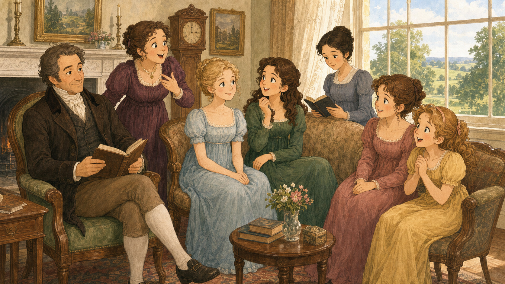
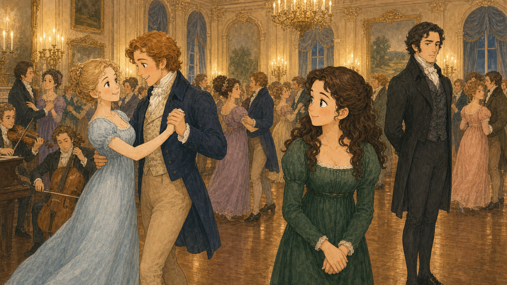
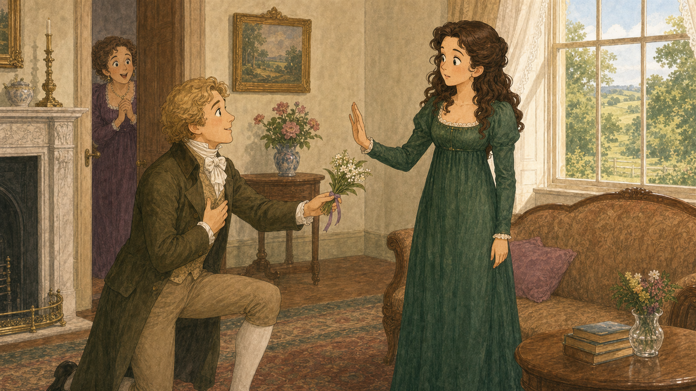
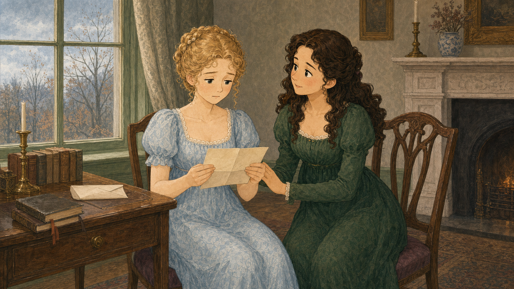
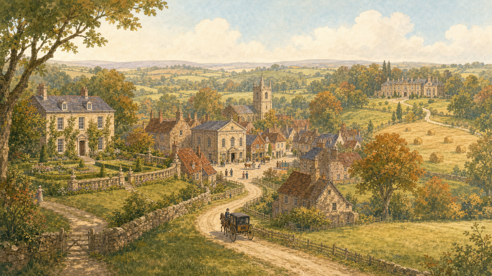

이야기 탐정단,
사건을 열어라!
책을 아직 읽지 않아도 괜찮아요. 짧은 이야기 조각을 차례로 열고, 숨겨진 원인과 인물의 다음 선택을 추리해 봅니다.
인물 렌즈
누가 무엇을 원하고 어떤 선택을 하는지 찾습니다.
사건 렌즈
원인–행동–결과가 어떻게 이어지는지 정리합니다.
배경 렌즈
장소와 시대의 규칙이 사건에 미친 영향을 살핍니다.
세 가지 렌즈를 구별해요
단서를 읽고 ‘인물·사건·배경’ 중 무엇을 알려 주는지 골라 보세요.
롱본에 사는 일곱 사람
인물을 눌러 겉으로 드러난 모습과 마음속 바람을 확인하세요.
누가 소식에 가장 크게 반응했나요? 말과 행동을 보고 각 인물이 무엇을 원하는지 추리해 보세요.
말보다 먼저 ‘원하는 것’을 찾아요
각 단서는 인물의 목표를 보여 줍니다. 누구의 마음인지 골라 보세요.
무도회장은 관계가 시작되는 무대
그림에서 장소·사람·분위기의 증거를 찾아 보세요.

장소
사람들이 춤추고 서로를 소개받아요.
분위기
즐거움과 어색함이 동시에 있어요.
시대 규칙
춤과 소개가 관계를 만드는 중요한 방법이에요.
무도회의 네 장면을 차례로
카드를 눌러 아래 사건 선에 순서대로 놓으세요. 다시 누르면 빼낼 수 있습니다.
첫인상에는 ‘본 것’과 ‘해석한 것’이 섞여요
문장을 사실 또는 인물의 판단으로 나누어 보세요.
눈으로 확인한 사실
인물이 내린 판단
같은 청혼, 서로 다른 생각
세 인물은 같은 장면에서 서로 다른 것을 원합니다.

청혼의 조건만 보지 말고, 콜린스가 묻지 않은 것과 엘리자베스가 중요하게 여긴 것을 찾아보세요.
엘리자베스
스스로 판단하고, 존중받는 결혼을 원합니다.
콜린스
결혼을 의무와 체면, 실용적인 선택으로 봅니다.
베넷 부인
딸의 안정된 미래와 집안의 걱정을 먼저 봅니다.
엘리자베스의 거절을 설명해요
거절의 근거가 되는 문장을 모두 고르세요.
편지가 남긴 사실과 아직 모르는 것
빙리가 떠났다는 소식 뒤에는 확인된 사실과 엘리자베스의 추측이 함께 있습니다.

편지에 직접 적힌 내용과 자매가 마음속으로 짐작한 내용을 구분하면 사건의 빈칸이 보입니다.
편지로 확인한 사실
아직 확인하지 못한 추측
장소가 바뀌면 가능한 행동도 달라져요
번호를 눌러 장소의 역할을 확인하세요.

장소의 짧은 이름만 확인한 뒤, 그곳에서 가능했던 사건을 직접 설명합니다.
인물과 사건을 내 방식으로 연결해요
인물 얼굴을 캔버스에 놓고 자유롭게 움직이세요. 두 항목을 선택해 선을 잇고, 관계·사건·장소 메모를 추가할 수 있습니다.
얼굴을 눌러 추가 → 자유롭게 끌어 배치 → 연결할 두 항목을 차례로 선택 → ‘선으로 연결’을 누르세요.
내가 찾은 이야기의 뼈대
짧게 말하거나 적어 보세요. 완성한 보고서는 A4로 인쇄할 수 있습니다.
© 2026 Oncuvate · 오만과 편견 인물·사건·배경 탐정단 · 1회차